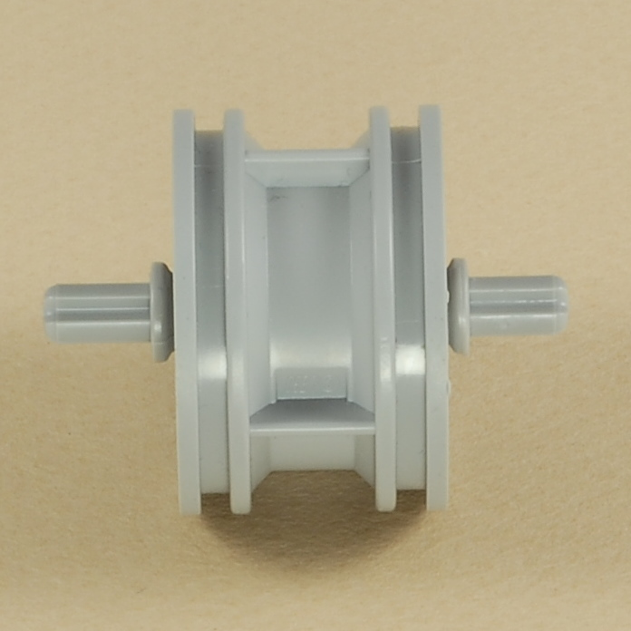

Fun Projects for your LEGO� MINDSTORMS� NXT!
|
|
Fun Projects for your LEGO� MINDSTORMS� NXT! |
| Mini Rover with 3-Button Remote |
|

1

2
3
4


 |
 |
5


6

7
| Mini
Rover with 3-Button Remote Programming You can use the 3ButtonRemote program to control the Mini Rover with the 3 buttons on the NXT. The orange button will make it go straight, and the two arrow buttons will make it turn left and right. For an improvement, see the Dial Remote Control project to see how to control the Mini Rover using this better remote control. |
Challenges
|
|
Copyright
�
2007-2010 by Dave Parker. All rights reserved. |